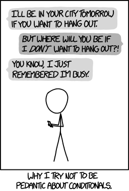

x <- 3
if (x > 2) {
y <- 8
} else {
y <- 4
}4 Control Flow
Control flow refers to statements in a computer program that that determines when, how, and how many times code is evaluated. In this reading you will learn about the two main types of control flow structures—if statements and for() loops.
4.1 Conditionals in Everyday Life
We are going to teach you about conditionals in R, but before we do it is good to remember that we use these types of statements all the time. Anytime you use if-then logic you are using a conditional!

These ideas go back to the practice activity we did with paper airplanes. With conditionals, we need to state exactly what we mean because the computer will do whatever we tell it to do.
4.2 Conditional Statements
A conditional statement determines what code is evaluated. In general, conditional statements look something like this:
if (condition){
stuff to do
}
else{
other stuff to do
}When the computer encounters a conditional statement, it first checks to see if the condition is met (TRUE) or if is is not met (FALSE). If the condition is TRUE, then the computer will execute the “stuff to do” inside the first set of {}. If the condition is FALSE, then the computer will execute the “other stuff to do” inside the second set of {}
4.2.1 Conditional Statements in R
In R, conditional statements look something like this:
There are a few things we need to notice about the syntax. First, we are using two words if and else to build the control flow. These are reserved names that R recognizes exactly for this type of task. Second, the condition being checked comes after if and is contained in parentheses (x > 2). The “stuff to do” when the condition is TRUE is enclosed in {} immediately after the if() statement. If the condition is FALSE, then R will execute the “other stuff to do” contained in the {} after else.
What value should y have?
ImportantCode Style
We could have written the above code as:
if (x > 2) y <- 8 else y <- 4and we would have gotten the same result. So, why should we make our code so long?
A braced expression, {}, defines the most important hierarchy of R code. So, we want to make the hierarchy easy to understand. To do this, our code should follow these three principles:
A
{should be the last character on the line (e.g.,if (x > 2) {).The contents inside the
{should be indented by two spaces.A
}should be the first character on the line (e.g.,} else {)A space should be included between
ifand the(starting the condition
Each of these principles of code style come from the Syntax section of the tidyverse style guide. We will use this style guide throughout the course!
4.2.2 Conditional Statements as Diagrams
We find it quite useful to represent control flows as diagrams! By drawing out the diagram (even if it is simple), you can more clearly anticipate what the result of the process will be.
![A simple diagram of what comprises an if/else conditional. At the top there is a green diamond and the inside of the diamond reads 'Condition to Check'. There are two arrows exiting the diamond, one pointing to the right that reads 'TRUE' and one pointing down that reads 'FALSE'. These represent the outcome of the conditional check. At the end of the 'TRUE' arrow there is a rectangle that reads 'Thing to do' representing what is done if the condition is met (TRUE). As the end of the 'FALSE' arrow there is a circle that reads 'Other thing to do' representing what is done if the condition is not met (FALSE).](images/03-simple-conditional-diagram.png)
4.3 Chaining Conditional Statements
In our previous control flow we only used if and else, but that only works if you have one condition you need to check. In many cases we have more than one condition to check, so we will need to modify our control flow.
When we have more than one condition to check, we can use an else if () statement. else if () works similar to an if () statement, where you specify a condition to check in the parentheses. This looks something like:
if (condition 1) {
stuff to do
} else if (condition 2) {
other stuff to do
} else {
other other stuff to do
}4.3.1 Multiple Conditions for Tax Brackets
Suppose we wanted to create a control flow to know how much in federal taxes someone in the US might pay. Based on the current IRS tax rates we have the following outcomes1:
| Income Range | Taxes |
|---|---|
| $0 to $11,925 | 10% |
| $11,926 to $48,475 | 12% |
| $48,476 $103,350 | 22% |
| $103,351 $197,300 | 24% |
| $197,301 $250,525 | 32% |
| $250,526 $626,350 | 35% |
| $626,351 and above | 37% |
Step 1: Draw out the diagram for the control flow. What conditions are being checked at each stage? If a condition is true what is the outcome? If a condition is false, what happens?
NoteCheck Your Answer
![A flowchart for figuring out what tax bracket someone should pay. The chart starts with an orange circle indicating the income (a numeric value) is being input into the flowchart. From there, there are a series of green diamonds each with a check for the income (e.g., income < $11,925). At each diamond there is an arrow pointing down with a value of TRUE next to the arrow, indicating that the condition checked was found to be TRUE. There is a second arrow pointing to the right with a value of FALSE next to the arrow, indicating that the contition checked was found to be false. Beneath each condition that found to be TRUE there is a blue rectangle with a tax percentage indicating the tax rate for that income bracket.](images/03-taxes-flowchart.png)
Step 2: Translate your diagram into R code!
NoteCheck Your Answer
if (income < 11925) {
tax <- 0.10
} else if (income <= 48475) {
tax <- 0.12
} else if (income <= 103350) {
tax <- 0.22
} else if (income <= 197300) {
tax <- 0.24
} else if (income <= 250525) {
tax <- 0.32
} else if (income < 626350){
tax <- 0.35
} else {
tax <- 0.37
}Okay, let’s try it out! A “typical” Assistant Professor in the College of Science and Math at Cal Poly makes $95,000. Based on your diagram, how much would a professor pay in taxes?
Let’s check! Setting income to 95000, our conditional statements tell us that the professor will pay 0.22 or 22% in taxes.
income <- 95000
if (income < 11925) {
0.10
} else if (income <= 48475) {
0.12
} else if (income <= 103350) {
0.22
} else if (income <= 197300) {
0.24
} else if (income <= 250525) {
0.32
} else if (income < 626350){
0.35
} else {
0.37
}[1] 0.22What if we tried salaries for a variety of CSU employees? Jeffrey Armstrong, Cal Poly’s President is paid $611,203 2, Midred Garcia, the CSU Chancellor is paid $795,000 3, and a full-time janitor at Cal Poly can expect to make somewhere around $45,000.
Let’s put these three salaries through our control flow to figure out how much each employee will pay in taxes.
income <- c(611203, 795000, 45000)
if (income < 11925) {
tax <- 0.10
} else if (income <= 48475) {
0.12
} else if (income <= 103350) {
0.22
} else if (income <= 197300) {
0.24
} else if (income <= 250525) {
0.32
} else if (income < 626350){
0.35
} else {
0.37
}Error in `if (income < 11925) ...`:
! the condition has length > 1Oh no! Our control flow didn’t work. What happened?
The error message we got ("the condition has length > 1") may seem strange at first, but it is actually incredibly informative.
What the error is telling us is that if (income < 11925) could not be evaluated because income has a length that is greater than 1. Meaning, our control flow can only work for scalar vectors (i.e., vectors with a single value).
4.4 Vectorized Operations
So, what do we do if we want to use a control flow for a vector of values? Well, we need to switch from using if (), else if (), and else to using functions that accept vectors of values.
Luckily for us, vectorized operations are very common in R! Take for example finding the square root of a given number. The sqrt() function accepts a vector of values an outputs the square root of each value.
[1] 1.732051 2.000000 3.000000 3.464102 4.000000 4.472136 5.0000004.4.1 Vectorized Control Flow
For our problem, we need to find a similar function that can accept a vector of salaries and match each salary with a tax rate. The case_when() function from the dplyr package does just that.
The syntax for this function looks like this:
Let’s break it down! You should first notice that each “case” is a separate argument to the function. Meaning, each case is separated by a ,. In our code, there are seven total cases.
Within a case, there are two components, (1) the left hand side (LHS) and the right hand side (RHS). The LHS is the condition that is being checked. This is the same as what went inside of an if () or an else if ().
In the middle you see a ~ symbol. You can read this as “then.” Meaning, if the condition on the LHS is TRUE then something should happen. What should happen? Well, that is exactly what the RHS specifies.
The last, somewhat odd looking syntax is the .default at the end. This is similar to the else {} at the end of our control flow, where both are used as a “catch all” for cases that were not specified. Notice that because every case that
But, does it work? Can case_when() provide a vector of tax brackets?
[1] 0.35 0.37 0.12Yes!!!
4.5 Help tab
You might be wondering, how would I have figured out the syntax for case_when() on my own? Well, let’s introduce you to the Help tab—your friend for getting help with how to use an R function.
There are two ways to pull up the help file for a function. First, you can type a ? before the function’s name ?case_when in your Console. Second, you can type the name of the function in the search bar in the upper right corner of the Help tab.
Either option should get you to a page that looks like this:
![A screenshot of the 'Help' tab in RStudio, where you can read documentation pages for R functions. There is a black diamond around the 'Help' title indicating that the purpose of the tab. There is a orange box around the search bar in the upper right corner indicating this is where you can search for a function's name. The help file displayed is for the case_when function in the dplyr package. The upper left corner of the documentation page displays the name of the function, followed by the name of the package the function lives in. Below, a title and description display what the purpose of the function is. Finally, at the bottom, an annotation arrow indicates that the 'arguments, value, and examples' can be found further down the page.](images/03-case-when-help.png)
There are three parts to the help file:
- The function arguments (inputs)
- The function value (output)
- Examples of how the function can be used
In the arguments for case_when() the documentation says “A sequence of two-sided formulas. The left hand side (LHS) determines which values match this case. The right hand side (RHS) provides the replacement value.” This is not intuitive for someone who’s never used this function. This is why we recommend looking over the examples first!
The documentation makes a bit more sense looking at the first example. We can more clearly see the LHS (x %% 35 == 0), which determines which values match this case. We see the right hand side "fizz buzz" which provides the replacement value.
x <- 1:70
case_when(
x %% 35 == 0 ~ "fizz buzz",
x %% 5 == 0 ~ "fizz",
x %% 7 == 0 ~ "buzz",
.default = as.character(x)
) [1] "1" "2" "3" "4" "fizz" "6"
[7] "buzz" "8" "9" "fizz" "11" "12"
[13] "13" "buzz" "fizz" "16" "17" "18"
[19] "19" "fizz" "buzz" "22" "23" "24"
[25] "fizz" "26" "27" "buzz" "29" "fizz"
[31] "31" "32" "33" "34" "fizz buzz" "36"
[37] "37" "38" "39" "fizz" "41" "buzz"
[43] "43" "44" "fizz" "46" "47" "48"
[49] "buzz" "fizz" "51" "52" "53" "54"
[55] "fizz" "buzz" "57" "58" "59" "fizz"
[61] "61" "62" "buzz" "64" "fizz" "66"
[67] "67" "68" "69" "fizz buzz"The documentation says the cases are specified as “two-sided formulas” which sounds confusing. All this means is there is a ~ separating the LHS from the RHS, which is apparent in all the examples provided:
OpinionJust our opinion...
In our opinion, learning how to read the “docs” (documentation pages) for functions in R is a critical skill. You would think that since these documentation pages are visible on the Internet, that you could just ask AI to give you this information. But, you’d be surprised the number of things AI can get wrong about how a function works.
Instead of wasting your time figuring out whether AI is giving you reasonable advice, why not go straight to the source? Read the R help files!
4.5.1 Finding New (Fun) Arguments
Through this help page, we can learn about new arguments we didn’t even know about. Take for example you can set .unmatched = "error". This allows you to see if the cases you’ve provide are actually exhaustive or if there are observations falling outside the possibilities you’ve defined.
num <- -10:10
case_when(num < 0 ~ "negative",
num > 0 ~ "positive",
.unmatched = "error")Error in `case_when()`:
! Each location must be matched.
✖ Location 11 is unmatched.Here we are getting an error because the 11th entry of num (0) does not have a case it is matched to. We only have positive and negative numbers! So, we should add a third case!
Keeping the .unmatched argument:
case_when(num < 0 ~ "negative",
num > 0 ~ "positive",
num == 0 ~ "zero",
.unmatched = "error") [1] "negative" "negative" "negative" "negative" "negative" "negative"
[7] "negative" "negative" "negative" "negative" "zero" "positive"
[13] "positive" "positive" "positive" "positive" "positive" "positive"
[19] "positive" "positive" "positive"Setting the .default (removing the .unmatched argument):
case_when(num < 0 ~ "negative",
num > 0 ~ "positive",
.default = "zero") [1] "negative" "negative" "negative" "negative" "negative" "negative"
[7] "negative" "negative" "negative" "negative" "zero" "positive"
[13] "positive" "positive" "positive" "positive" "positive" "positive"
[19] "positive" "positive" "positive"4.6 Loops
Technically, this is a bit of an over simplification. If you make $75,000 you actually pay 10% for the first $11,925, then 12% for the next $36,550 (to get to $48,475), then 22% for the final $26,525.↩︎
Armstrong is also provided a house on Cal Poly’s campus.↩︎
Garcia is also provided $96,000 for housing and $80,000 for deferred compensation.↩︎